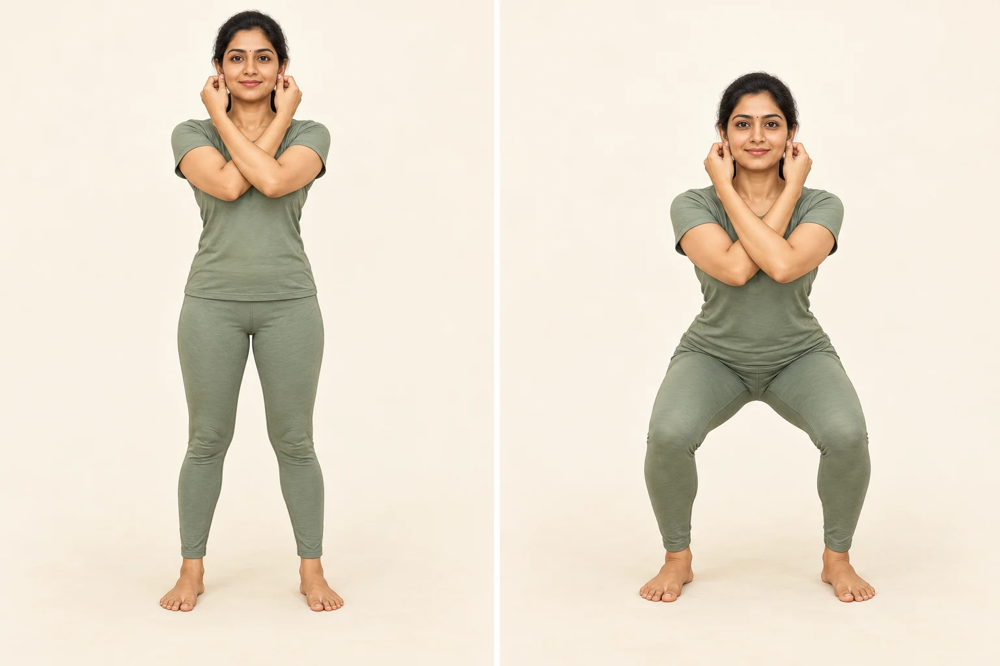

Traditional practice · Mindful movement
Ear-holding Squats.
தோப்புக்கரணம் · Thoppukaranam
A traditional practice associated with worship of Ganesha, especially in South India: cross the arms, gently hold the opposite earlobes, and lower and rise in a squat. It is also promoted as “Super Brain Yoga”; that label should not be taken as proof of enhanced intelligence. [72]
Lower-body strengthCoordinationBalance demandAdaptable depth
Ear-holding Squats · picture guide
Left: stand upright, crossing the arms to hold the opposite earlobes gently. Right: lower into a comfortable squat, then return to standing. That is one repetition.

Enlarge picture ↗
AI-generated illustration. Use a shallower squat if needed. If balance requires hand support, omit the ear hold and use the supported variation below. Follow the full instructions and precautions.
Choose the version that fits your balanceHolding both ears leaves no hand free for support. If you feel unsteady, use the supported version below and leave out the ear hold. A shallow, comfortable movement is enough; a deep squat is optional, not a requirement.
Body areas & movement
Primary: Legs & knees. Secondary: Hips & glutes, Ankles & feet, and Core & abdomen.
The thighs and glutes work as you lower and stand. Hips, knees and ankles bend together; trunk muscles help control posture. Crossing the arms adds a shoulder-position demand. This is an editorial movement analysis, not evidence that the practice treats pain in those areas.
Before starting
- Use a clear, nonslip surface and comfortable clothing.
- Warm up with a short easy walk or gentle marching.
- Have a stable chair or fixed counter available if needed.
- Remove or avoid earrings that could snag; do not pinch sore or recently pierced ears.
Preparation and precautions are conservative DivineYoga adaptations. General movement guidance: [73].
Step-by-step · comfortable beginner version
- Stand steadily. Place feet about hip-to-shoulder width apart, with toes at a comfortable angle. Look ahead and soften the knees.
- Cross the arms. Bring the left hand to the right earlobe, then the right hand to the left earlobe. Hold lightly between thumb and forefinger. Keep neck and shoulders relaxed; do not pull the head forward. If reaching hurts, omit the ear hold.
- Prepare to sit back. Keep the whole foot grounded and distribute weight evenly. Let the hips move slightly back as hips and knees bend.
- Lower slowly. Use only a comfortable depth. Let the knees follow the direction of the toes, without collapsing inward. Keep the back comfortably long; a small forward torso lean is normal. Do not force a rigid upright trunk.
- Keep breathing. For this exercise adaptation, inhale gently as you lower and exhale as you stand. If coordinating the breath is distracting, breathe naturally. Do not hold or strain the breath.
- Rise smoothly. Press through the feet and straighten the hips and knees together. Finish upright without snapping the knees back. Lowering and rising once counts as one repetition.
- Finish before fatigue changes your form. Try 3–5 easy repetitions initially, or fewer. Release the ears and rest. Increase gradually only if comfortable during practice and afterward; there is no required daily count.
This is a shortened, shallow-squat adaptation, not the research protocol or a universal ritual prescription. Ear-holding context: [72]. Controlled squat and progression principles: [73]. Breathing cue and starter count are editorial suggestions.
Beginner modifications
- Supported mini-squat: hold a fixed counter or stable chair back with both hands. Make a small knee and hip bend, then rise. Omit the ear hold.
- Chair sit-to-stand: use a firm, non-wheeled chair that will not slide. Stand and sit slowly, using the arms if necessary. Choose a seat height that allows comfortable movement.
- Reduced depth: stop well before any pain or loss of control. A full squat is not needed.
These are alternatives to the full ear-holding version; the NHS supports chair-based strength exercises, not the special cognitive claims for Thoppukaranam. [73]
Do
- Keep the ear contact gentle.
- Move at a controlled pace and keep breathing.
- Use support whenever balance is uncertain.
- Stop the set while you can still rise comfortably.
- Choose practice voluntarily and without punishment or pressure.
Don’t
- Do not tug the ears, clench the jaw or strain the shoulders.
- Do not bounce, rush or chase a deep squat.
- Do not continue through pain, dizziness or unusual breathlessness.
- Do not follow large repetition targets merely because they are traditional.
- Do not assume that more effort gives greater “brain activation.”
Cautions & when to seek guidance
Ask a physiotherapist or clinician for individual advice before starting if you have painful knees, hips or back, recent surgery or injury, recurrent dizziness or falls, or a condition that limits exertion. During pregnancy, seek appropriate guidance about balance and exercise adaptations. Ear or shoulder problems may make the crossed-arm hold unsuitable.
Stop for sharp pain, joint instability, faintness or unusual shortness of breath. Seek urgent medical care for chest pain, fainting, or severe or persistent breathing difficulty. Targeting the knees or back does not make this an appropriate treatment for pain there. These are general editorial precautions, not a complete medical assessment. [1]
Benefits — what is reasonable to expect?
- Lower-body exercise: the squat component can contribute to strength and mobility, and practises the everyday skill of lowering and standing. These are general exercise benefits, not a special effect of ear holding. [73]
- Coordination practice: following a sequence while controlling movement and breathing provides an attention task. This is a practical observation, not a guaranteed improvement in memory or learning.
- Cultural or personal meaning: some people value its devotional context. That value is separate from clinical evidence. [72]
What does the research say?
A small within-person study of 30 young adults compared baseline, ordinary squats and Thoppukaranam on separate days. It reported short-term changes in attention and psychological measures after Thoppukaranam. Its small, mostly male student sample and brief testing do not establish lasting cognitive improvement, benefits for older adults, or treatment for any condition. [72]
Do not treat the study as proof that ear pressure “balances brain hemispheres,” increases intelligence, or treats ADHD, autism or dementia. The study also excluded people with joint pain and several health conditions, so it cannot establish safety for those groups. [72]